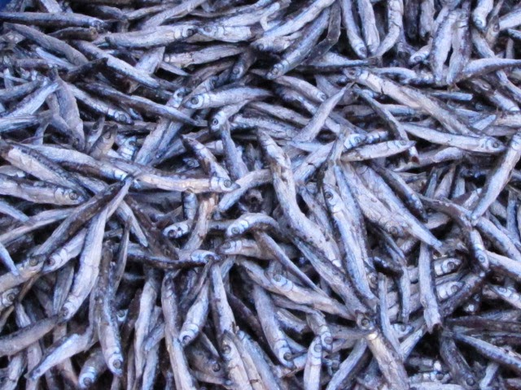

A lake nyasa is a thirdly largest lake in tanzania. In tanzania a lake nyasa are found on the southern part of tanzania A lake nyasa it totalize a three country which are malawi, tanzania, and mosambique so according from that country to use that lake lead to that lakeb to have a three names that are given according to a related country these names are lake nyasa in tanzania, lago niassa in mosambique and lake malawi in malawi
lake nyasa have the various features like formation of always waves, it is shallowish, it has hard waters, it has arrounded by small atons in a some places, it has many types of fishs such as cichlide, sardin etc
there are various kinds of activities taking place in laki nyasa such 1 agriculture 2 fishing 3 pastoralism also in that lake there are various crops that grouwing such as
There are many benefits in a lake nyasa such as
So you are most welcome mo get and enjoying our menu that we bring to you as see down of this head..................also wen you visit at a lake nyasa beach you must enjoy an location and features of this lake that is because a lake nyasa it located with good location for photograph enjoy lake nyasa's sardin 